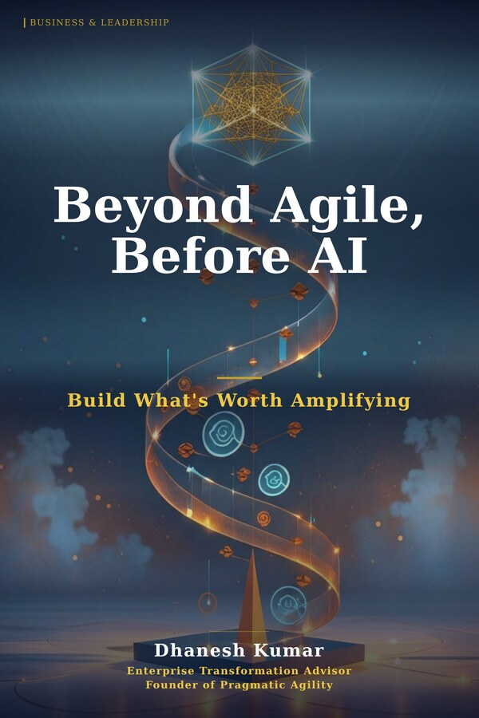

Now Available on Amazon · Business & Leadership
Beyond Agile,
Before AI
Build What's Worth Amplifying
A diagnosis of why well-resourced transformations stall — and a practical framework for building the organizational conditions that make any methodology, and eventually any AI, worth deploying.
About the Book
Why Transformations Stall — and What Actually Fixes Them
Most organizations attempting transformation have everything they need on paper: executive sponsorship, allocated budget, capable people, and the right methodology. Yet the results rarely match the ambition. Sprints run. Frameworks launch. AI tools get purchased. And still — meaningful change doesn't take root.
"The problem isn't the methodology. The problem is that the organization wasn't built to sustain it. You can't amplify what isn't worth amplifying."
Beyond Agile, Before AI is a clear-eyed diagnosis of why even well-resourced, well-intentioned transformations fail to stick — and a practical framework for building the organizational conditions that make lasting change possible. Not just for Agile. Not just for AI. For any methodology worth deploying.
Written by Dhanesh Kumar, with 20+ years guiding enterprise transformations across banking, insurance, and technology, this book bridges the gap between theoretical frameworks and the messy, human reality of organizational change.
Inside the Book
What You'll Discover
01
The Amplification Trap
Why AI and Agile accelerate dysfunction as much as they accelerate value — and how to recognize if your organization is in the trap.
02
What's Actually Worth Amplifying
A diagnostic framework to assess the organizational conditions — culture, leadership, ways of working — that determine whether change sticks.
03
Human-First Foundations
Why sustainable transformation begins with people, not platforms — and the specific leadership behaviours that create the conditions for change.
04
Before You Go Agile
The organizational prerequisites that most Agile implementations skip — and what happens when you try to skip them.
05
Before You Deploy AI
A readiness model for Human-First AI adoption — covering governance, literacy, trust, and the human-in-the-loop design patterns that make AI safe to scale.
06
Building for Sustained Change
A practical roadmap for leaders who want lasting outcomes — not just initial adoption — from their transformation investments.
Who This Book Is For
Written for Leaders at the Inflection Point
If you're responsible for organizational change — and frustrated that smart, well-funded efforts aren't producing durable results — this book was written for you.
Executive Leaders
CEOs, COOs, and C-suite sponsors who own the transformation mandate and need to understand why methodology alone isn't enough.
Transformation Leaders
CTOs, CDOs, and transformation officers navigating both Agile maturity and AI readiness at enterprise scale.
Agile Coaches & Consultants
Practitioners who've seen the patterns and want a shared language for the foundational work that makes frameworks succeed.
HR & People Leaders
Leaders responsible for culture, capability, and organizational design who want to understand the human side of transformation.
Product & Delivery Leaders
VPs of Product, Engineering, and Delivery who want their teams to move faster — but sustainably, not just busily.
AI Strategy Leaders
Those building the business case for AI adoption and wondering why the organizational conditions aren't ready to support it.
Get Your Copy
Build What's Worth Amplifying
Available now on Amazon. Start building the organizational conditions that make every methodology — and every AI investment — actually deliver.